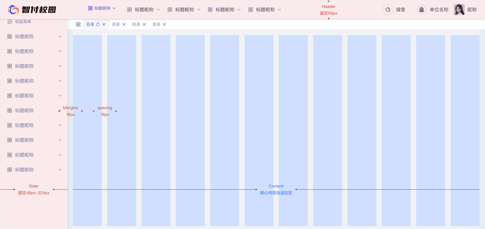

design code 设计规范
布局
布局是指在界面设计中对元素进行排列和组织的方式，它决定了用户如何与界面交互，以及信息如何被呈现。良好的布局能够提高用户体验，使界面更加直观和易于使用。
布局规范
布局模式
布局模式是指界面设计中常用的布局结构，包括固定布局、流式布局、响应式布局等。不同的布局模式适用于不同的场景和设备。

栅格系统
栅格系统是一种用于组织和排列界面元素的工具，它将页面划分为均匀的网格，使元素的排列更加有序和一致。
| 断点 | 范围 | 容器宽度 | 列数 | 间距 |
|---|---|---|---|---|
| Small | < 768px | 100% | 4 | 16px |
| Medium | 768px - 1024px | 720px | 8 | 16px |
| Large | 1024px - 1440px | 960px | 12 | 24px |
| Extra Large | ≥ 1440px | 1200px | 12 | 24px |
间距系统
间距（Spacing）是UI设计中至关重要的元素，它用于控制组件之间的距离，优化界面体系，提升差异性和用户体验。合理的间距管理可以使界面更加整洁、统一，并有助于建立一致的设计语言。为了页面布局的一致性，在不同区域中放置内容元素时，应当保持间距的规律性。我们推荐一组具有韵律的间距值，在遵循8倍数原则的基础上，增加了4、12两档小间距，以灵活满足不同的应用场景。
| 命名 | 场景 | 圆角半径 | 标注代表颜色 |
|---|---|---|---|
| Mini | 小尺寸的组件图标与文字间距 | 4px | |
| Small | 常规尺寸的组件与文字的内间距 | 8px | |
| Regular | 常规组件的内间距 | 12px | |
| Base | 板块的间距 | 16px | |
| Comfort | 模块分割或板块内的内间距 | 24px | |
| Section | 特殊场景 | 32px | |
| Layout | 特殊场景 | 40px | |
| Hero | 特殊场景 | 48px | |
| Ultra | 特殊场景 | 64px |
圆角分级
根据不同的组件类型和标准，统一设定圆角值，以保证设计的一致性。
| 命名 | 场景 | 圆角半径 | 预览 |
|---|---|---|---|
| 0 | 表格核心、严格场景 | 0px | |
| Mini | 按钮、小型输入框、标签 | 4px | |
| Small | 弹窗、弹出层 | 8px | |
| Medium | 特殊组件、品牌设计元素 | 16px | |
| Large | 特殊组件、品牌设计元素 | 24px | |
| Extra Large | 特殊组件、品牌设计元素 | 32px | |
| 圆角-变量 | 胶囊类直角类切换 | 999px |
布局组成
为了减少布局设定时的沟通与拆分计算成本，基于主流屏幕尺寸，我们将设计团队的标准画板宽度定为1440px或1920px。内部区域（Content）：通常用于放置主体内容。顶部区域（Header）：位于页面顶部，通常用于放置顶部导航。侧边区域（Sider）：位于主体内容两侧，通常用于放置侧边导航。底部区域（Footer）：位于页面底部，通常用于放置辅助信息。
布局模式
栅格系统
间距系统
圆角分级
布局组成